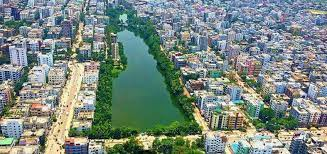

Uttara Model Town

City Information
- District: Dhaka
- Division: Dhaka
- Metropolitan: DNCC
- Establishment: 1966
- Founded by: RAJUK
- Area: 36.91 square km
- Population: 179907
- Density: 4,874.20/sq km
Uttara Model Town or simply Uttara (Bengali: উত্তরা) is a suburb of Dhaka, the capital of Bangladesh. The name derives from the Bengali word uttar meaning "north". It lies on the road to Gazipur, and adjoins Hazrat Shahjalal International Airport.In 1966, Dhaka Improvement Trust planned to build a satellite town under North Satellite Town project in Dhaka District. In 1980, DIT changed the project name into Uttara Residential Model Town Project.
Major Streets of Uttara
- Sonargaon Janapath
- Jashimuddin Avenue
- Isha Kha Avenue
- Rabindra Sarani
- Gareeb-e-Nawaz Avenue
- Gausul Azam Avenue
- Shah Makhdum Avenue
- Alaul Avenue
- Shayesta Kha Avenue
- Shahjalal Avenue
- Ranabhola Avenue
Latest updates of Uttara
The Daily Star
The Times Of India
DhakaTribune
Prothom Alo
Mail the author